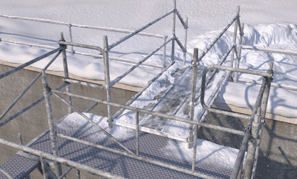
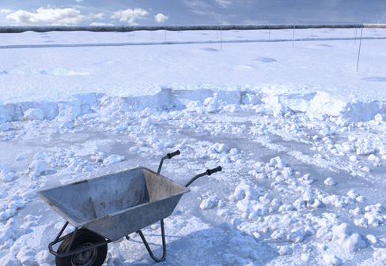
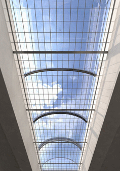
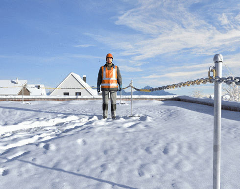
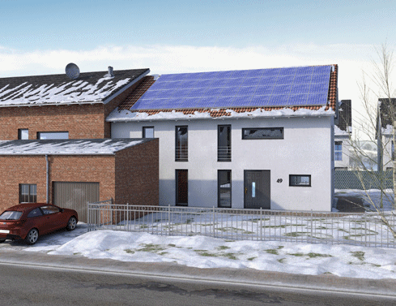

Sind bei bestehenden Dächern Maßnahmen zum Schutz gegen Absturz gemäß Abschnitt 10 nicht vorhanden, sind im Rahmen des Schneemanagements geeignete Maßnahmen im Vorfeld zu treffen. Dachflächen von bestehenden Gebäuden sind häufig nicht durchtrittsicher ausgeführt. Deshalb ist hier das Durchsturzrisiko beim Schneeräumen besonders hoch. Dieses Risiko ist aufgrund der in der Regel vorhandenen großen Absturzhöhen und der damit verbundenen Wahrscheinlichkeit einer schweren oder tödlichen Verletzungsfolge, als nicht tolerierbar zu bezeichnen.
Hieraus folgt, dass ohne geeignete Maßnahmen zum Schutz gegen den Absturz keine Schneeräumungsarbeiten durchgeführt werden dürfen.
Wenn das vorhandene Bauwerk über keinen sicheren Verkehrsweg auf das Dach verfügt, stellen z. B. Gerüsttreppentürme eine geeignete Möglichkeit dar.
|
Allgemeiner Hinweis
|
| Eine Steigleiter ist kein geeigneter Zugang, da sie aufgrund der Witterungsverhältnisse nicht sicher begangen werden kann. Außerdem können auf einer Steigleiter keine Gerätschaften transportiert werden. |
Die Standflächen für die Treppentürme müssen vom Schnee geräumt werden, um den Treppenturm sicher aufstellen zu können und Stolper-, Rutsch- und Sturzunfälle zu verhindern. Für den Übergang vom Treppenturm auf ein Flachdach kann z. B. ein mind. 0,50 m breiter Laufsteg mit einem beidseitigen Seitenschutz dienen (Abbildung 16).

Abb. 16 Treppenturm mit Übergang zum Flachdach
Bestehen Dachflächen aus nicht durchsturzsicheren Bauteilen, so sind diese auszutauschen oder es ist ein Räumkonzept zu wählen, bei dem ein Aufenthalt von Personen auf der Dachfläche nicht erforderlich ist.
Lichtkuppeln oder Lichtbänder sind grundsätzlich als nicht durchsturzsicher einzuschätzen. Zusätzlich ist zu beachten, dass Oberlichter auf schneebedeckten Dächern nicht ausreichend sichtbar sind (Abbildung 17). An Lichtkuppeln oder Lichtbändern können dauerhafte Sicherungen wie z. B. Unterfangungen oder Überdeckungen montiert werden (Abbildung 18). Diese Sicherungsmaßnahmen sollten sinnvoller Weise vor dem Wintereinbruch ausgeführt werden.

Abb. 17 Vom Schnee überdeckte Lichtkuppeln

Abb. 18 Dauerhaft gesichertes Lichtband
Zum Schutz gegen Absturz nach Außen kann bei Flachdächern z. B. in einem Abstand von mindestens 2,00 m von der Absturzkante eine einfache Absperrung (Kette) oder mobile Flachdach-Absturzsicherungssystem verwendet werden (Abbildung 19).

Abb. 19 Absperrung des Gefahrbereichs mit einer Kette
Flachdachabsturzsicherungen dürfen nur verwendet werden, wenn das hierfür erforderliche Material sicher auf das Dach transportiert werden und die Montage mittels PSAgA von einer geeigneten Anschlageinrichtung gesichert erfolgen kann.
Bei Steildächern sind im Vorfeld Maßnahmen nach Abschnitt 10.2.2 (Abbildung 15) zu treffen.
Lassen sich aus arbeitstechnischen Gründen die vorgenannten Maßnahmen nicht umsetzen, z. B. an den Abwurfstellen, kann in diesen Bereichen PSA zum Schutz gegen Absturz verwendet werden. Um die schneebedeckten Anschlageinrichtungen besser auffinden zu können, empfiehlt es sich diese im Vorfeld durch z. B. vertikale Pfosten zu markieren.
Bei speziellen Dachkonstruktionen und Dachaufbauten (z. B. Membrandächer, Dächer mit Photovoltaikanlagen) gilt es unter Umständen die folgenden besonderen Randbedingungen zu betrachten (Abbildung 20).

Abb. 20 Dachfläche ausgestattet mit einer Photovoltaikanlage
So verbieten viele Unternehmen, die PV-Anlagen herstellen, eine Schneeräumung der Module, weil dabei deren Beschädigung nicht ausgeschlossen werden kann. Hier kann unter Umständen z. B. die Verwendung von Auftauanlagen oder automatisierten Räumanlagen sinnvoll sein.
Zudem wird empfohlen bei zukünftigen Planungen der Gestaltung von PV-Anlagen Verkehrswege mit entsprechenden Absturzsicherungen anzuordnen.